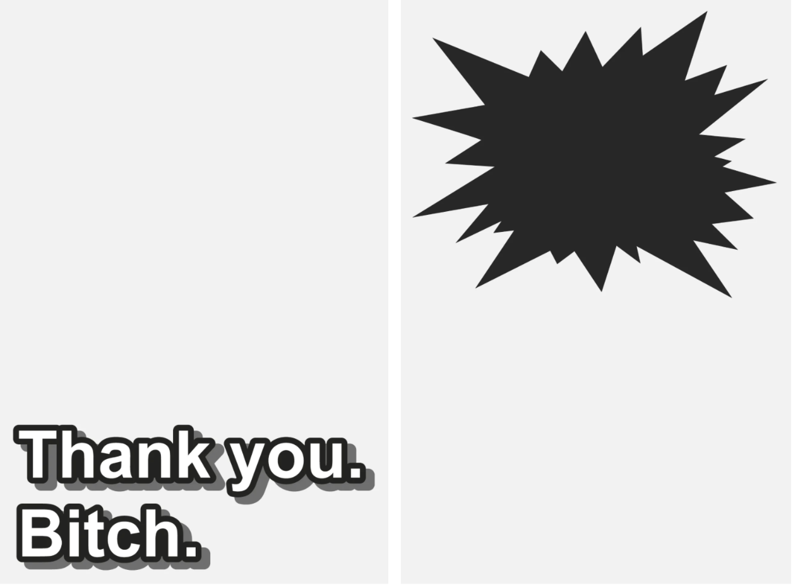
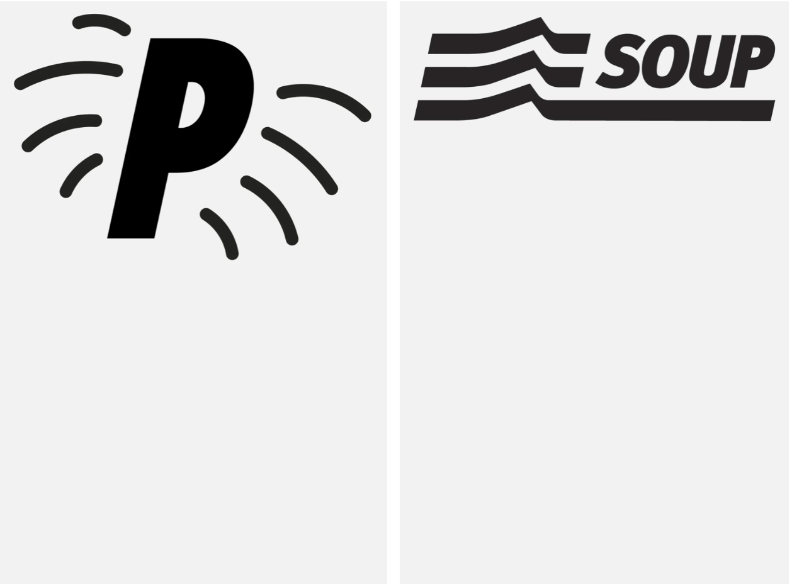
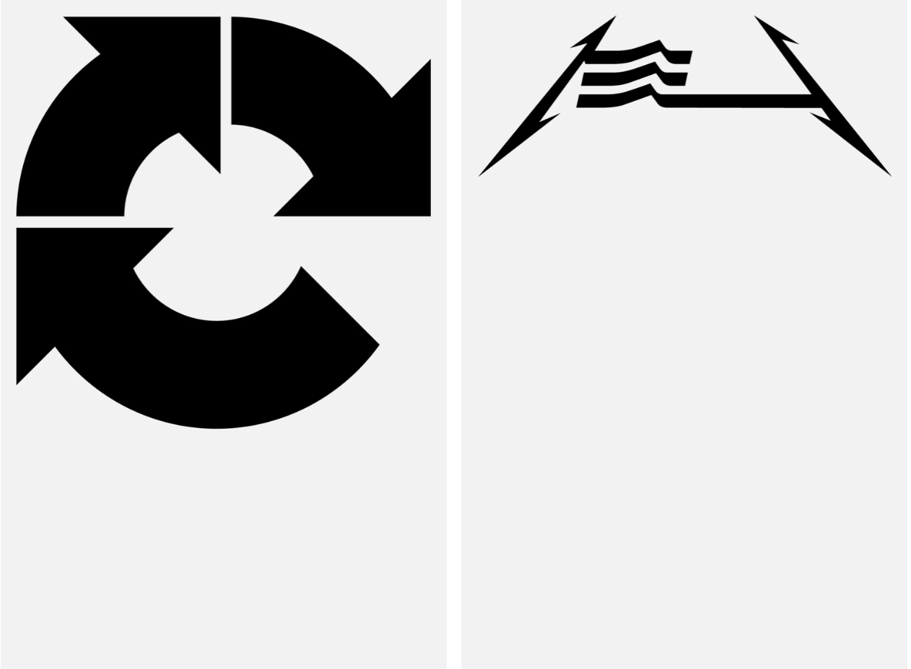
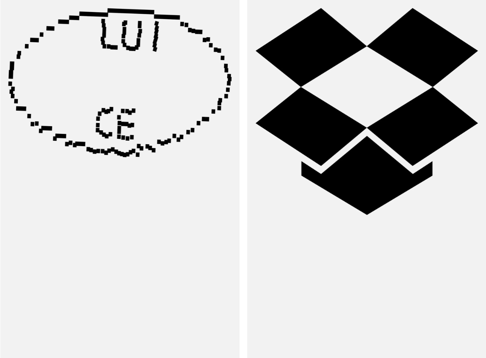
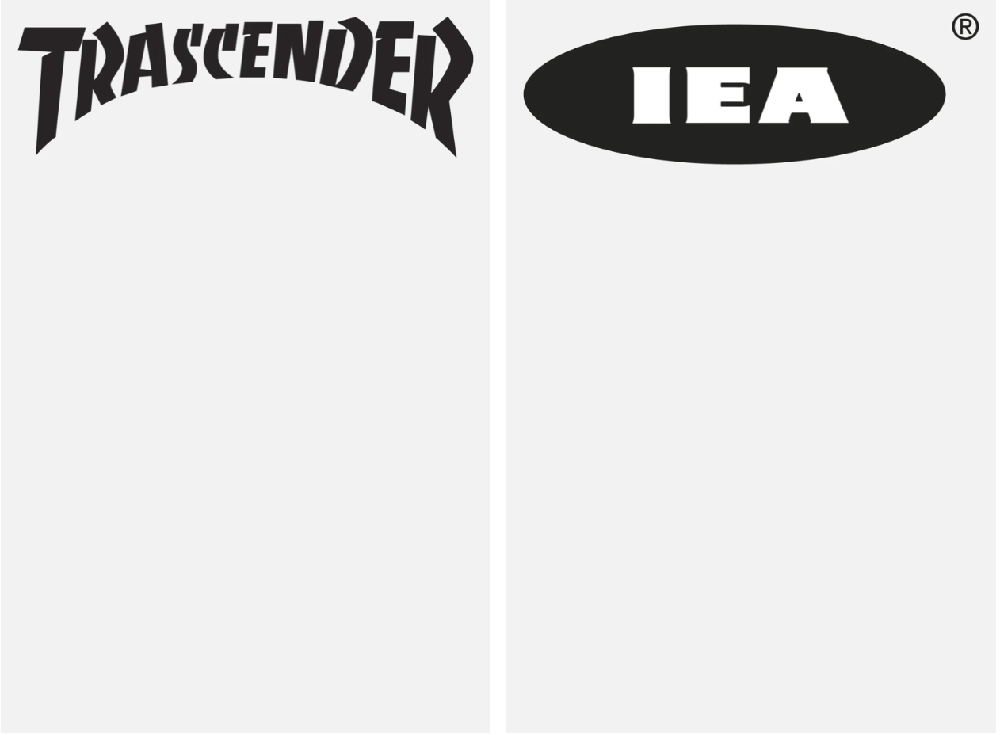

"Patches"
"Patches" is a collection of vector files, including original drawings and tracings. I started creating these entities in 2013 by tracing the UIs of software such as Adobe Audition and Photoshop, Audacity, Firefox, Pure Data, and Max MSP. Over time, I have reworked and modified logos and logotypes of well-known brands, hacking them to explore the semantic implications of pictograms. Below is a selection of images exported as .png files and arranged on 1280x1920px boards with a #f2f2f2 background, 72DPI RGB, the setup I use to organise them in my archive, which now contains over a thousand panels. These recurring elements appear across different media in my work, including videos, frames, walls, and card decks.




